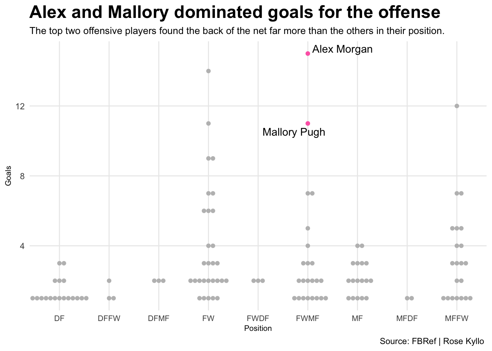
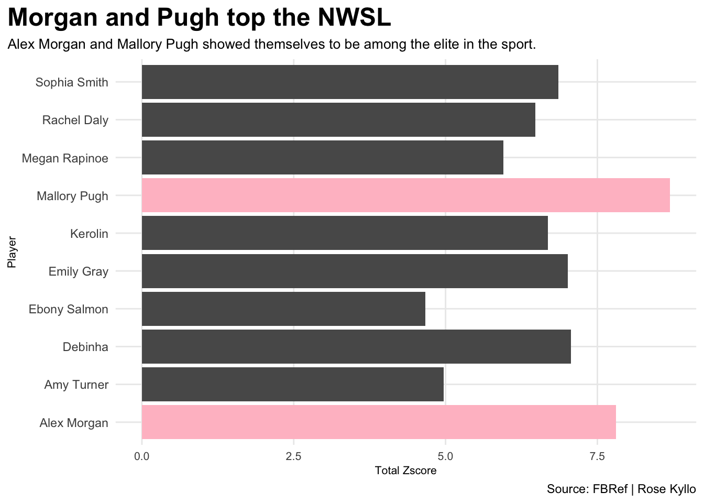
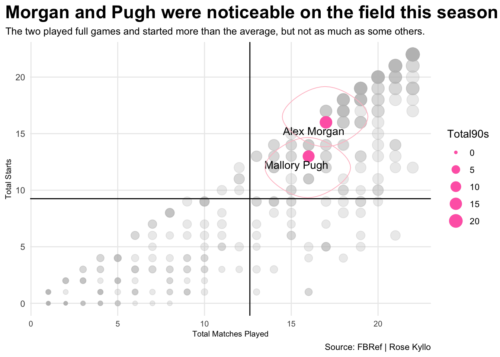

Were Alex Morgan and Mallory Pugh fit for NWSL MVP?
nwsl
soccer
code
Author
Rose Kyllo
Published
December 4, 2022
Forward Alex Morgan and Forward-Mid Fielder Mallory Pugh have been topping the charts in the NWSL for years. Both women were considered for the NWSL MVP award this 2022 season. Although neither were chosen due to the outstanding performance of Forward Sophia Smith, they both seemed to outshine many players within the NWSL.
Anyone watching a NWSL game can see that Morgan and Pugh are exceptional players, but did they really deserve to be in the running for MVP?
Let’s take a look at some numbers.
Sports Reference’s soccer site produces all the different statistics one would need to evaluate if a player should be considered for an award. For example, things such as total goals in a season and their position.
To compare Morgan and Pugh’s total goals on a larger scale, we will compare their number of goals to every other player in the league’s.
Code
library(tidyverse)library(ggbeeswarm)library(ggrepel)library(ggalt)set.seed(1234)soccer<-read_csv("2022.csv")activeplayers <- soccer %>%filter( MP >5& Gls...11>0&is.na(Pos) ==FALSE)malandalex <- activeplayers %>%filter(Player =="Mallory Pugh"|Player=="Alex Morgan")mal<- activeplayers%>%filter(Player=="Mallory Pugh")alex<-activeplayers%>%filter(Player=="Alex Morgan")ggplot() +geom_beeswarm(data=activeplayers, groupOnX=TRUE, aes(x=Pos, y=Gls...11), color="grey") +geom_beeswarm(data=malandalex, groupOnX=TRUE, aes(x=Pos, y=Gls...11), color="hot pink") +geom_text_repel(data=malandalex, aes(x=Pos, y=Gls...11, label=Player)) +labs(title="Alex and Mallory dominated goals for the offense",subtitle="The top two offensive players found the back of the net far more than the others in their position.", caption="Source: FBRef | Rose Kyllo ", x="Position", y="Goals") +theme_minimal()+theme(plot.title =element_text(size =18, face ="bold"),axis.title =element_text(size =8),plot.subtitle =element_text(size =10),panel.grid.minor =element_blank(),axis.text.x =element_text(size =8),plot.title.position = )

Morgan and Pugh were unsurprisingly at the top of their position. Morgan was actually the top scorer of the entire league, while Pugh was equal with one forward and got trumped by another. This chart shows they definitely deserved to be in the running, but they had some tough competition.
The next question to ask is, how did the two rank compared to other players? I used a total z-score to rank the players based on the average of goals scored per match, the average of assists per match and the average minutes played per match. The ranking uses a statistical measure of the distance from the mean called a z-score. Here’s the top 10 players with the best z-scores.
zbar <- top10toptwo<- zbar %>%filter(Player=="Mallory Pugh"| Player=="Alex Morgan")ggplot() +geom_bar(data=zbar, aes(x=Player, weight=TotalZscore)) +geom_bar(data=toptwo, aes(x=Player, weight=TotalZscore),fill="pink")+coord_flip() +labs(x="Player", y="Total Zscore", title="Morgan and Pugh top the NWSL ", subtitle="Alex Morgan and Mallory Pugh showed themselves to be among the elite in the sport.", caption="Source: FBRef | Rose Kyllo" ) +theme_minimal()+theme(plot.title =element_text(size =18, face ="bold"),axis.title =element_text(size =8),plot.subtitle =element_text(size =10),panel.grid.minor =element_blank(),axis.text.x =element_text(size =8),plot.title.position ="plot" )

Pugh took the cake in this one with the highest z-score. No surprise here, Morgan took second. This is just another example to prove that the two players were hard fighters in this MVP competition, and also against each other.
The last question to ask here is, are these statistics really fair in the context of playing time? When one player has less playing time than another, but they score many goals in that short time, they will look statistically more impressive than others. Let’s look at how Morgan and Pugh’s playing time stacked up against one other.
ggplot() +geom_point(data=mps, aes(x=TotalMatches, y=TotalStarts, size=Total90s), color="grey", alpha=.3) +geom_point(data=pughandmorgan, aes(x=TotalMatches, y=TotalStarts, size=Total90s), color="hot pink")+geom_vline(xintercept =12.61465) +geom_hline(yintercept =9.248408)+geom_text_repel(data=pughandmorgan,aes(x=TotalMatches, y=TotalStarts, label=Player)) +geom_encircle(data=Alex, aes(x=TotalMatches-.05, y=TotalStarts+.5), s_shape=.1, expand=.01, colour="pink")+geom_encircle(data=Mal, aes(x=TotalMatches-.05, y=TotalStarts+-1), s_shape=.1, expand=.01, colour="pink")+labs(x="Total Matches Played", y="Total Starts", title="Morgan and Pugh were noticeable on the field this season", subtitle="The two played full games and started more than the average, but not as much as some others.", caption="Source: FBRef | Rose Kyllo" ) +theme_minimal()+theme(plot.title =element_text(size =18, face ="bold"),axis.title =element_text(size =8),plot.subtitle =element_text(size =10),panel.grid.minor =element_blank(),axis.text.x =element_text(size =8),plot.title.position ="plot" )

Pugh had a few less matches played and starts than Morgan, but the full 90s that were played were equal. They both played more than the average player, and were not far off from each other. This means their respective statistics are fair and telling of their out of this world ability.
There is no doubt that Morgan and Pugh definitely deserved to be in the running for MVP, the statistics prove it. If they continue to perform like they did this season, maybe next one of them will take home the honor.